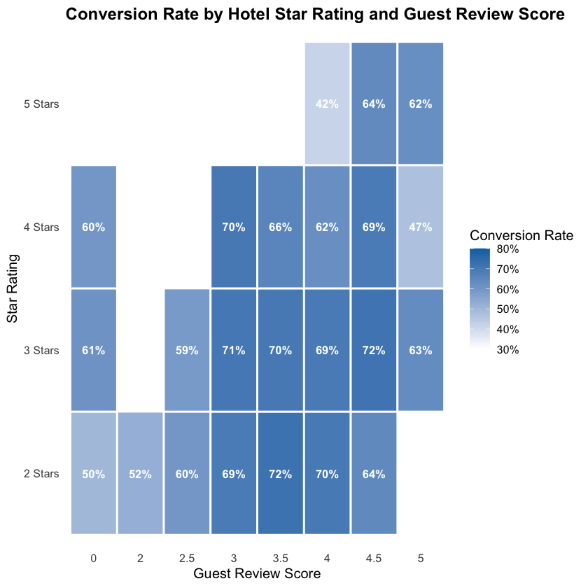
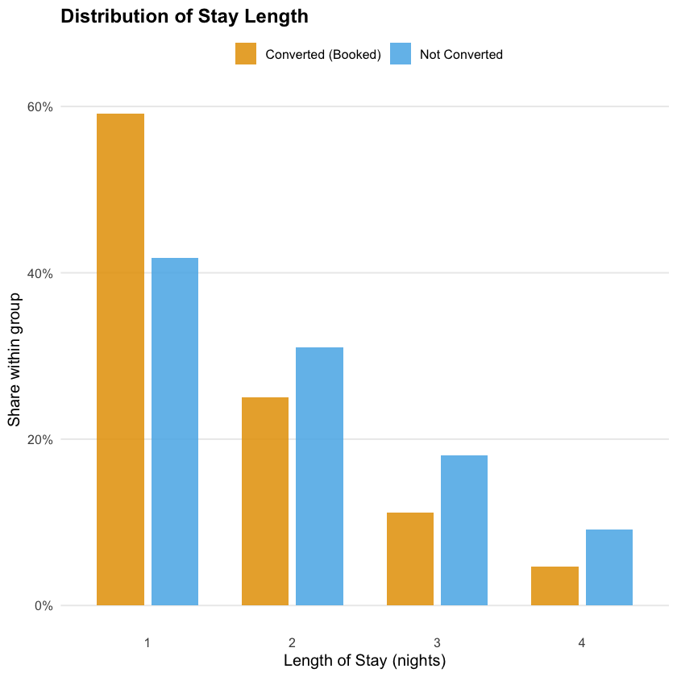
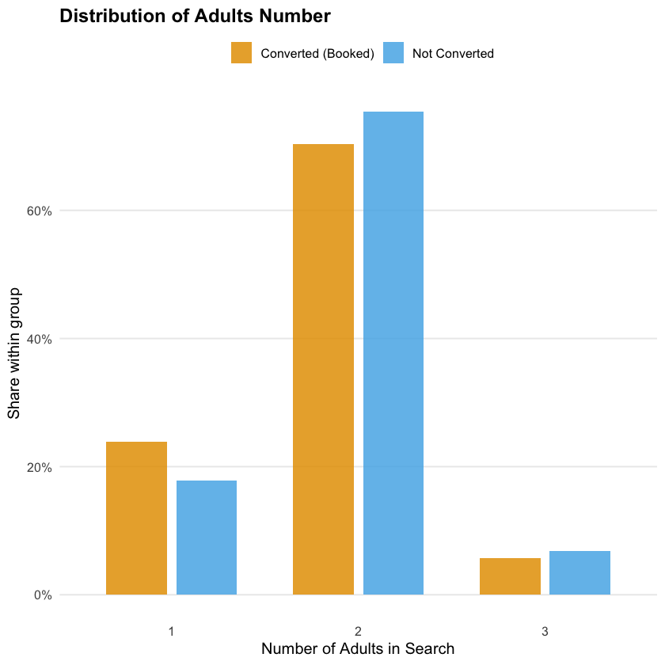
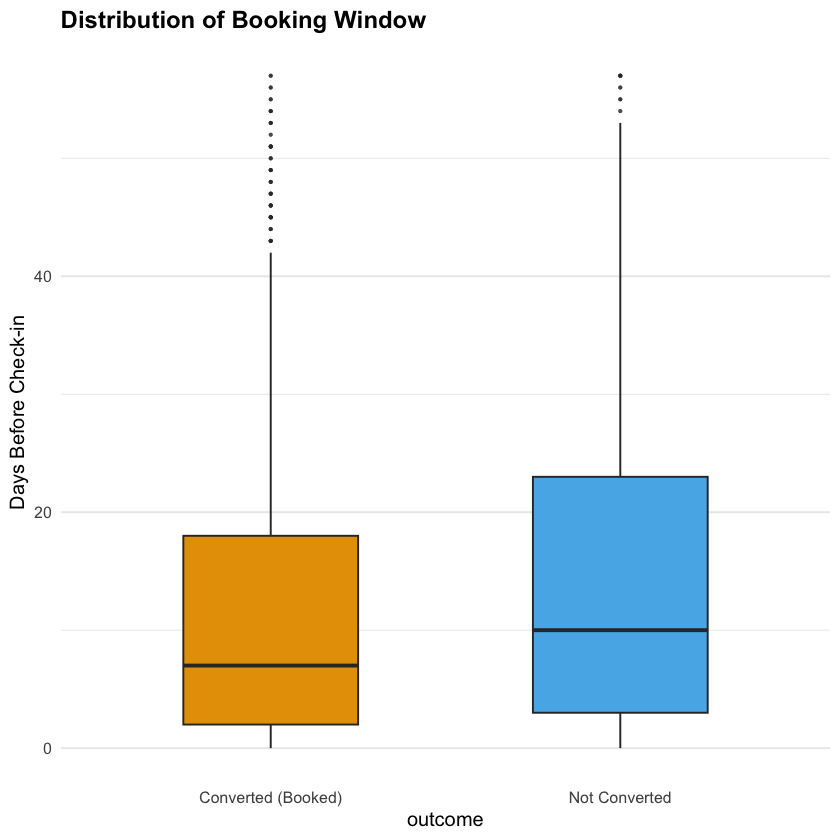
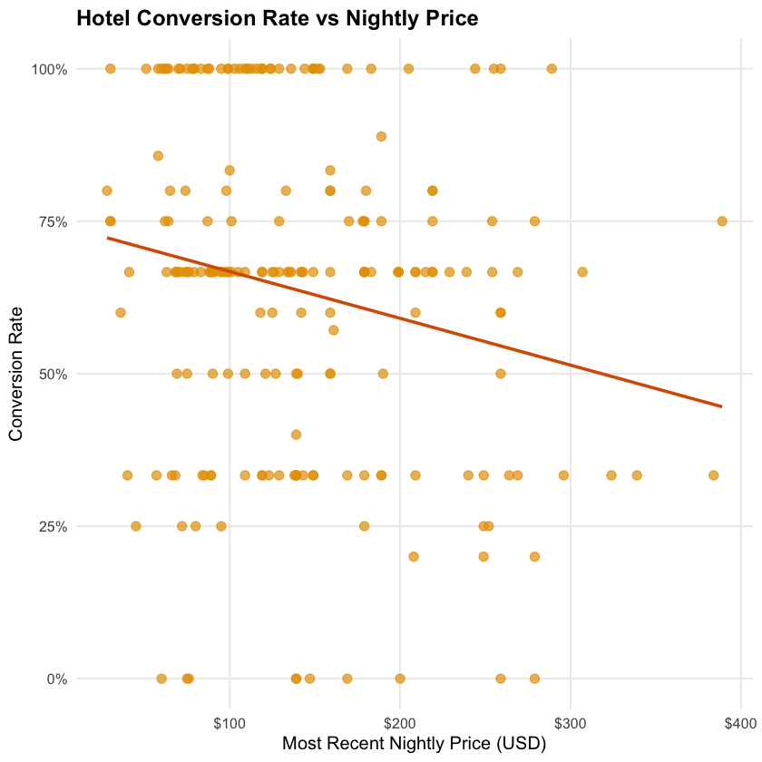
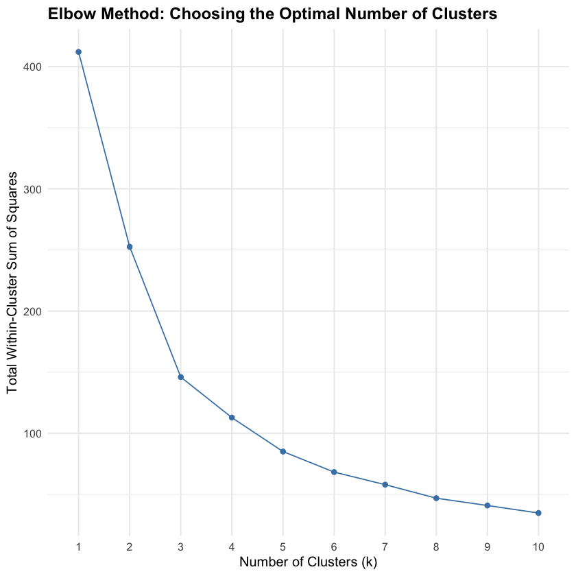
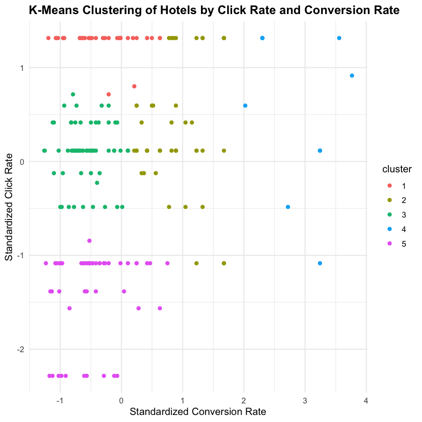
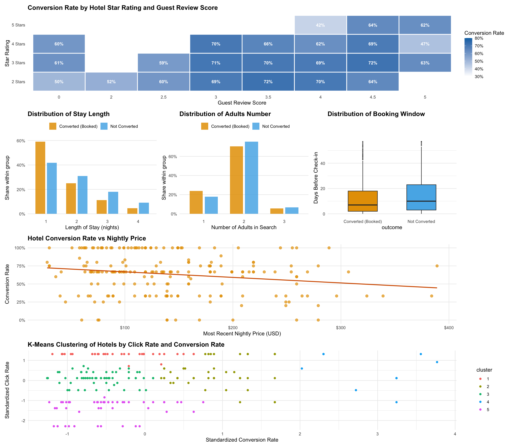

Expedia Case Demo: What Factors Are Associated with Higher Click-Through Rates on Expedia?¶
Part A. Cleaning and Analysing Data¶
1. Introduction¶
Research Question: Which hotel and search characteristics are associated with higher conversion rates — that is, among users who clicked on a hotel listing on Expedia, what distinguishes those who went on to book from those who did not?
Method: This is a descriptive analysis. We use grouping, summary statistics, and k-means clustering to characterise how conversion rates differ across hotel attributes and search characteristics. We are not claiming that any factor causes a booking or any factor predicts future bookings; we are describing patterns in the data that can inform how Expedia ranks listings and targets high-intent users.
2. Data Preparation & Analysis¶
(1) Load Libraries¶
library(tidyverse) # data wrangling and visualization
library(scales) # formatting axis labels (e.g., percent)
library(patchwork) # combining multiple plots
library(ggokabeito) # colour-blind-friendly palette (course default)
library(recipes) # scaling
library(cluster) # K-means
library(factoextra) # K-mean visualization
(2) Load the Dataset¶
Load the dataset and create the key variable used in this study.
expedia <- read_csv("data/expedia.csv")
# Create the conversion indicator on the full dataset before any filtering.
# converted = 1: user clicked AND booked (successful conversion)
# converted = 0: user clicked but did NOT book (failed conversion)
# converted = NA: user never clicked (conversion is not applicable)
expedia <- expedia |>
mutate(
converted = case_when(
click_bool == 1 & booking_bool == 1 ~ 1,
click_bool == 1 & booking_bool == 0 ~ 0,
.default = NA
)
)
# Quick preview of the raw dataset
expedia |> slice_head(n = 10)
| srch_id <dbl> | date_time <date> | site_id <dbl> | visitor_location_country_id <dbl> | visitor_hist_starrating <chr> | visitor_hist_adr_usd <chr> | prop_country_id <dbl> | prop_id <dbl> | prop_starrating <dbl> | prop_review_score <chr> | ... | comp7_rate <chr> | comp7_inv <chr> | comp7_rate_percent_diff <chr> | comp8_rate <chr> | comp8_inv <chr> | comp8_rate_percent_diff <chr> | click_bool <dbl> | gross_bookings_usd <chr> | booking_bool <dbl> | converted <dbl> |
|---------------|------------------|---------------|-----------------------------------|-------------------------------|----------------------------|-----------------------|---------------|-----------------------|-------------------------|-----|------------------|-----------------|-------------------------------|------------------|-----------------|-------------------------------|------------------|--------------------------|--------------------|-----------------|
| 61 | 2013-06-22 | 5 | 219 | NULL | NULL | 219 | 16517 | 3 | 4.5 | ... | NULL | NULL | NULL | NULL | NULL | NULL | 0 | NULL | 0 | NA |
| 61 | 2013-06-22 | 5 | 219 | NULL | NULL | 219 | 31767 | 2 | 3.5 | ... | NULL | NULL | NULL | NULL | NULL | NULL | 0 | NULL | 0 | NA |
| 61 | 2013-06-22 | 5 | 219 | NULL | NULL | 219 | 39799 | 2 | 3.0 | ... | NULL | NULL | NULL | NULL | NULL | NULL | 0 | NULL | 0 | NA |
| 61 | 2013-06-22 | 5 | 219 | NULL | NULL | 219 | 68629 | 2 | 2.0 | ... | NULL | NULL | NULL | NULL | NULL | NULL | 0 | NULL | 0 | NA |
| 61 | 2013-06-22 | 5 | 219 | NULL | NULL | 219 | 73060 | 3 | 3.0 | ... | NULL | NULL | NULL | NULL | NULL | NULL | 0 | NULL | 0 | NA |
| 61 | 2013-06-22 | 5 | 219 | NULL | NULL | 219 | 78003 | 3 | 4.5 | ... | NULL | NULL | NULL | NULL | NULL | NULL | 0 | NULL | 0 | NA |
| 61 | 2013-06-22 | 5 | 219 | NULL | NULL | 219 | 107306 | 3 | 3.5 | ... | NULL | NULL | NULL | NULL | NULL | NULL | 0 | NULL | 0 | NA |
| 61 | 2013-06-22 | 5 | 219 | NULL | NULL | 219 | 123254 | 3 | 4.5 | ... | NULL | NULL | NULL | NULL | NULL | NULL | 0 | NULL | 0 | NA |
| 61 | 2013-06-22 | 5 | 219 | NULL | NULL | 219 | 124295 | 3 | 3.5 | ... | NULL | NULL | NULL | NULL | NULL | NULL | 0 | NULL | 0 | NA |
| 61 | 2013-06-22 | 5 | 219 | NULL | NULL | 219 | 124573 | 3 | 4.0 | ... | NULL | NULL | NULL | NULL | NULL | NULL | 1 | NULL | 0 | 0 |
(3) Data Cleaning¶
In this section, we remove extreme values from continuous variables and exclude rows
with a null converted label. First, we inspect the extreme values and proportion of missing values.
# Inspect the distribution of the four continuous variables we will clean
# This helps us identify the extent of extreme values before filtering
expedia |>
select(srch_length_of_stay, srch_adults_count, srch_booking_window, price_usd) |>
summary()
srch_length_of_stay srch_adults_count srch_booking_window price_usd
Min. : 1.000 Min. :1.000 Min. : 0.00 Min. : 13.0
1st Qu.: 1.000 1st Qu.:2.000 1st Qu.: 3.00 1st Qu.: 88.0
Median : 2.000 Median :2.000 Median : 11.00 Median : 122.0
Mean : 2.049 Mean :2.023 Mean : 22.71 Mean : 153.1
3rd Qu.: 3.000 3rd Qu.:2.000 3rd Qu.: 28.00 3rd Qu.: 179.0
Max. :24.000 Max. :9.000 Max. :472.00 Max. :58642.0
# Check the share of non-clicked rows and the resulting proportion of missing converted values
# We also verify how many listings have an extreme price above $500
expedia |>
summarise(
n_total = n(),
n_non_click = sum(click_bool == 0),
p_non_click = n_non_click / n_total,
n_na_convert = sum(is.na(converted)),
p_na_convert = n_na_convert / n_total,
)
| n_total <int> | n_non_click <int> | p_non_click <dbl> | n_na_convert <int> | p_na_convert <dbl> |
|---------------|-------------------|-------------------|--------------------|--------------------|
| 158269 | 151393 | 0.956555 | 151393 | 0.956555 |
From the summary output, we can observe that srch_length_of_stay, srch_adults_count, srch_booking_window, and price_usd contain extreme values, reaching up to 24 nights of living, 9 adults, 472 days ahead of trip, and $58,000 per night respectively. These values are unlikely to reflect typical search behaviour and could distort our summaries. We also note that converted is null for approximately 95.7% of rows, but this is expected, because the missing rate matches exactly the share of listings with click_bool == 0, and converted is only defined for users who clicked.
In the next step, we remove extreme values and restrict the dataset to clicked listings only. For srch_length_of_stay, srch_adults_count, and srch_booking_window, we trim observations above the 90th percentile of each variable, as these represent atypical search behaviour that could distort our summaries. For price_usd, we apply a hard threshold of $500, which provides a clean and interpretable cutoff for downstream analysis. Finally, we exclude all rows where converted is null, restricting the dataset to clicked listings only.
# Apply all cleaning filters in one step:
# - Trim the top 10% of srch_length_of_stay, srch_adults_count, and srch_booking_window
# - Remove hotels priced above $500
# - Keep only clicked listings (i.e., rows where converted is not NA)
expedia_clean <- expedia |>
filter(
srch_length_of_stay <= quantile(srch_length_of_stay, 0.90),
srch_adults_count <= quantile(srch_adults_count, 0.90),
srch_booking_window <= quantile(srch_booking_window, 0.90),
price_usd <= 500,
!is.na(converted)
)
# Spot-check the cleaned dataset
expedia_clean |> slice_head(n = 10)
| srch_id <dbl> | date_time <date> | site_id <dbl> | visitor_location_country_id <dbl> | visitor_hist_starrating <chr> | visitor_hist_adr_usd <chr> | prop_country_id <dbl> | prop_id <dbl> | prop_starrating <dbl> | prop_review_score <chr> | ... | comp7_rate <chr> | comp7_inv <chr> | comp7_rate_percent_diff <chr> | comp8_rate <chr> | comp8_inv <chr> | comp8_rate_percent_diff <chr> | click_bool <dbl> | gross_bookings_usd <chr> | booking_bool <dbl> | converted <dbl> |
|---------------|------------------|---------------|-----------------------------------|-------------------------------|----------------------------|-----------------------|---------------|-----------------------|-------------------------|-----|------------------|-----------------|-------------------------------|------------------|-----------------|-------------------------------|------------------|--------------------------|--------------------|-----------------|
| 81 | 2013-06-25 | 5 | 219 | NULL | NULL | 219 | 103860 | 2 | 3.0 | ... | NULL | NULL | NULL | NULL | NULL | NULL | 1 | NULL | 0 | 0 |
| 106 | 2013-06-17 | 5 | 219 | NULL | NULL | 219 | 39675 | 3 | 4.5 | ... | NULL | NULL | NULL | NULL | NULL | NULL | 1 | 171.64 | 1 | 1 |
| 106 | 2013-06-17 | 5 | 219 | NULL | NULL | 219 | 112905 | 2 | 0.0 | ... | NULL | NULL | NULL | NULL | NULL | NULL | 1 | NULL | 0 | 0 |
| 118 | 2013-06-17 | 5 | 219 | NULL | NULL | 219 | 86727 | 3 | 4.5 | ... | NULL | NULL | NULL | 0 | 0 | NULL | 1 | 439.77 | 1 | 1 |
| 180 | 2013-06-29 | 5 | 219 | NULL | NULL | 219 | 96068 | 2 | 3.5 | ... | NULL | NULL | NULL | 0 | 0 | NULL | 1 | NULL | 0 | 0 |
| 242 | 2013-06-04 | 5 | 219 | NULL | NULL | 219 | 17690 | 2 | 2.5 | ... | NULL | NULL | NULL | NULL | NULL | NULL | 1 | 120.12 | 1 | 1 |
| 297 | 2013-06-04 | 5 | 219 | NULL | NULL | 219 | 38088 | 2 | 3.0 | ... | NULL | NULL | NULL | -1 | 0 | 5 | 1 | 385.72 | 1 | 1 |
| 322 | 2013-06-18 | 5 | 219 | NULL | NULL | 219 | 118456 | 3 | 4.0 | ... | NULL | NULL | NULL | NULL | NULL | NULL | 1 | 161.06 | 1 | 1 |
| 325 | 2013-06-03 | 5 | 219 | NULL | NULL | 219 | 41261 | 3 | 3.0 | ... | NULL | NULL | NULL | -1 | 0 | 5 | 1 | 149.86 | 1 | 1 |
| 328 | 2013-06-06 | 5 | 219 | NULL | NULL | 219 | 66466 | 4 | 4.5 | ... | NULL | NULL | NULL | 0 | 0 | NULL | 1 | NULL | 0 | 0 |
After all cleaning steps, 5,485 rows remain for analysis.
(4) Data Processing¶
We now create several derived variables to support the analysis. review_group collapses the continuous guest review score into four ordered categories. promo_label converts the binary promotion flag into a readable label. star_label recodes the numeric star rating into a descriptive factor. All categorical variables are then encoded as ordered factors so that plots and summaries display in a meaningful sequence.
# Create derived categorical variables for use in grouping and visualisation
expedia_clean <- expedia_clean |>
mutate(
# Collapse continuous review score into four ordered bands
review_group = case_when(
prop_review_score < 3.0 ~ "Low (below 3.0)",
prop_review_score >= 3.0 & prop_review_score < 4.0 ~ "Medium (3.0–3.9)",
prop_review_score >= 4.0 & prop_review_score < 4.5 ~ "Good (4.0–4.4)",
prop_review_score >= 4.5 ~ "Excellent (4.5–5.0)"
),
star_label = case_when(
prop_starrating == 0 ~ "Unrated",
prop_starrating == 1 ~ "1 Star",
prop_starrating == 2 ~ "2 Stars",
prop_starrating == 3 ~ "3 Stars",
prop_starrating == 4 ~ "4 Stars",
prop_starrating == 5 ~ "5 Stars",
)
)
# Encode all categorical variables as ordered factors
# This ensures plots and tables display groups in a meaningful sequence
expedia_clean <- expedia_clean |>
mutate(
review_group = factor(
review_group,
levels = c(
"Low (below 3.0)",
"Medium (3.0–3.9)",
"Good (4.0–4.4)",
"Excellent (4.5–5.0)"
)
),
star_label = factor(
star_label,
levels = c(
"Unrated",
"1 Star",
"2 Stars",
"3 Stars",
"4 Stars",
"5 Stars"
)
)
)
Then, we retain only the columns that are used in this project to keep the dataset clean and readable.
# Select only the columns used in this analysis
# Dropping unused columns reduces clutter and makes downstream code easier to follow
expedia_clean <- expedia_clean |>
select(
# Hotel and search identifiers
prop_id,
srch_id, # used to sort by recency when computing last price
# Hotel attributes
prop_starrating,
prop_review_score,
price_usd,
promotion_flag,
# Search behaviour
position,
srch_length_of_stay,
srch_adults_count,
srch_booking_window,
# Outcome variables
click_bool,
booking_bool,
converted
)
A final spot-check confirms the new columns look as expected before we proceed to analysis.
expedia_clean |> slice_head(n = 10)
A tibble: 10 × 13
| prop_id <dbl> | srch_id <dbl> | prop_starrating <dbl> | prop_review_score <chr> | price_usd <dbl> | promotion_flag <dbl> | position <dbl> | srch_length_of_stay <dbl> | srch_adults_count <dbl> | srch_booking_window <dbl> | click_bool <dbl> | booking_bool <dbl> | converted <dbl> |
|---------------|---------------|-----------------------|-------------------------|-----------------|----------------------|----------------|---------------------------|-------------------------|---------------------------|------------------|--------------------|-----------------|
| 103860 | 81 | 2 | 3.0 | 92 | 0 | 23 | 1 | 2 | 3 | 1 | 0 | 0 |
| 39675 | 106 | 3 | 4.5 | 180 | 1 | 2 | 1 | 2 | 24 | 1 | 1 | 1 |
| 112905 | 106 | 2 | 0.0 | 183 | 0 | 7 | 1 | 2 | 24 | 1 | 0 | 0 |
| 86727 | 118 | 3 | 4.5 | 99 | 0 | 21 | 3 | 2 | 31 | 1 | 1 | 1 |
| 96068 | 180 | 2 | 3.5 | 109 | 0 | 10 | 3 | 2 | 1 | 1 | 0 | 0 |
| 17690 | 242 | 2 | 2.5 | 53 | 1 | 18 | 2 | 2 | 12 | 1 | 1 | 1 |
| 38088 | 297 | 2 | 3.0 | 167 | 0 | 2 | 2 | 1 | 10 | 1 | 1 | 1 |
| 118456 | 322 | 3 | 4.0 | 156 | 1 | 2 | 1 | 2 | 31 | 1 | 1 | 1 |
| 41261 | 325 | 3 | 3.0 | 134 | 0 | 7 | 1 | 2 | 12 | 1 | 1 | 1 |
| 66466 | 328 | 4 | 4.5 | 140 | 0 | 20 | 4 | 1 | 0 | 1 | 0 | 0 |
We also create a hotel-level dataset hotel_clean that aggregates each hotel's click rate (computed from the full dataset, so that non-clicked impressions are included in the denominator) and conversion rate (computed from clicked listings only). Additional search-level averages — price, length of stay, party size, and booking window — are also summarised per hotel for use in the clustering analysis.
# Step 1: Compute click rate from the full dataset (price-filtered but NOT click-filtered)
# Using the full data here is critical: click_rate = clicks / impressions,
# so non-clicked rows must be included in the denominator
hotel_click_rate <- expedia |>
filter(price_usd <= 500) |>
group_by(prop_id) |>
summarise(
n_shown = n(),
click_rate = mean(click_bool),
) |>
ungroup()
# Step 2: Compute conversion rate and search-level averages from clicked listings only
# last_price uses the most recent search (sorted by srch_id) as a proxy for current price
hotel_conv_rate <-
expedia_clean |>
arrange(srch_id) |>
group_by(prop_id) |>
summarise(
n_clicked = n(),
conversion_rate = mean(converted, na.rm = TRUE),
last_price = last(price_usd), # most recent observed price
avg_length_stay = mean(srch_length_of_stay, na.rm = TRUE),
avg_adults = mean(srch_adults_count, na.rm = TRUE),
avg_booking_window = mean(srch_booking_window, na.rm = TRUE),
) |>
ungroup()
# Step 3: Join the two hotel-level summaries
# Keep only hotels with at least 3 clicks to ensure conversion rate estimates are stable
hotel_clean <-
hotel_click_rate |>
inner_join(hotel_conv_rate, by = "prop_id") |>
filter(
n_clicked >= 3
)
# Step 4: Verify the range of key variables in hotel_clean
hotel_clean |>
summarise(
n_hotels = n(),
click_min = min(click_rate),
click_max = max(click_rate),
conv_min = min(conversion_rate),
conv_max = max(conversion_rate),
price_min = min(last_price),
price_max = max(last_price)
)
| n_hotels <int> | click_min <dbl> | click_max <dbl> | conv_min <dbl> | conv_max <dbl> | price_min <dbl> | price_max <dbl> |
|----------------|-----------------|-----------------|----------------|----------------|-----------------|-----------------|
| 207 | 0.03225806 | 0.8333333 | 0 | 1 | 28 | 389 |
3. Data Analysis¶
(1) Summary of Conversion Rate¶
This analysis focuses on conversion rate — the share of clicked hotels that resulted in a booking. All analyses use expedia_clean, which contains only the clicked listings. The converted variable equals 1 (booked), 0 (not booked), or NA (never clicked, excluded from all analyses).
# Compute the overall conversion rate as a benchmark for all subsequent comparisons
overall_cvr <- expedia_clean |>
summarise(
n_clicked = n(),
n_converted = sum(converted == 1, na.rm = TRUE),
n_not_converted = sum(converted == 0, na.rm = TRUE),
conversion_rate = mean(converted, na.rm = TRUE)
)
overall_cvr
| n_clicked <int> | n_converted <int> | n_not_converted <int> | conversion_rate <dbl> |
|-----------------|-------------------|-----------------------|-----------------------|
| 5485 | 3710 | 1775 | 0.6763902 |
(2) Conversion Rate vs Star Rating & Review Score¶
We use a heatmap to examine how conversion rate varies jointly across hotel star rating and guest review score. Each cell represents one star–review combination, with colour intensity indicating the conversion rate; only combinations with at least 10 clicked listings are shown to ensure reliable estimates. Star rating runs along the y-axis (2 to 5 stars) and guest review score along the x-axis (0 to 5 in 0.5-point steps), allowing us to read off both dimensions simultaneously — something a single bar chart cannot achieve.
# Compute conversion rate for each star × review score combination
# Restrict to 2–5 stars (unrated and 1-star have too few observations)
# Filter to cells with at least 10 clicked listings for reliable estimates
cvr_star_review <-
expedia_clean |>
filter(prop_starrating %in% 2:5) |>
group_by(prop_starrating, prop_review_score) |>
summarise(
n_clicked = n(),
conversion_rate = mean(converted, na.rm = TRUE),
) |>
ungroup() |>
filter(n_clicked >= 10) |>
mutate(
# as.numeric() prevents ggplot from treating the grouping variable as a factor,
# which would cause a "discrete value supplied to continuous scale" error
prop_review_score = as.numeric(prop_review_score),
star_label = factor(
prop_starrating,
levels = 2:5,
labels = c("2 Stars", "3 Stars", "4 Stars", "5 Stars")
)
)
plot_heatmap <-
cvr_star_review |>
ggplot(aes(x = factor(prop_review_score), y = star_label, fill = conversion_rate)) +
geom_tile(colour = "white", linewidth = 0.8) +
geom_text(
aes(label = percent(conversion_rate, accuracy = 1)),
size = 3.5,
colour = "white",
fontface = "bold"
) +
scale_fill_gradient(
low = "white",
high = palette_okabe_ito()[5],
limits = c(0.3, 0.8),
labels = percent_format(accuracy = 1),
name = "Conversion Rate"
) +
labs(
title = "Conversion Rate by Hotel Star Rating and Guest Review Score",
x = "Guest Review Score",
y = "Star Rating",
) +
theme_minimal(base_size = 12) +
theme(
plot.title = element_text(face = "bold"),
plot.subtitle = element_text(colour = "grey40"),
panel.grid = element_blank(),
axis.ticks = element_blank(),
legend.position = "right"
)
plot_heatmap

Two patterns emerge from the heatmap. First, 3-star hotels with review scores between 3.5 and 4.5 consistently achieve the highest conversion rates, reaching 67–71%. This suggests that users who click on mid-range hotels with solid but not exceptional reviews are already well-matched to the listing and commit to booking at a high rate. Second, 5-star hotels convert noticeably below the overall average even when their review scores are high — a 5-star hotel rated 5.0 converts at only around 54%. This likely reflects the hesitation that comes with premium pricing: users browse luxury listings out of curiosity but pull back at the final step. Together, these patterns suggest that conversion is driven not by quality alone, but by the fit between perceived quality and price expectations.
(3) Conversion Rate vs Journey Type¶
This section examines how conversion outcome relates to three journey characteristics: length of stay, party size, and booking lead time. We use grouped proportional bar charts for the first two variables — since both are discrete integers, this avoids the artificial multi-peak artefacts that a kernel density curve would produce — and a box plot for booking window, which captures the spread of a continuous variable more cleanly.
# Length of stay: grouped proportional bar chart
# after_stat(prop) normalises each outcome group to sum to 1,
# making the two groups directly comparable despite their different sizes
plot_los <- expedia_clean |>
mutate(
outcome = if_else(converted == 1, "Converted (Booked)", "Not Converted"),
outcome = factor(outcome, levels = c("Converted (Booked)", "Not Converted"))
) |>
ggplot(aes(x = factor(srch_length_of_stay),
y = after_stat(prop),
fill = outcome,
group = outcome)) +
geom_bar(position = position_dodge(width = 0.75),
width = 0.65, alpha = 0.85) +
scale_y_continuous(labels = percent_format(accuracy = 1)) +
scale_fill_okabe_ito(name = "") +
labs(
title = "Distribution of Stay Length",
x = "Length of Stay (nights)",
y = "Share within group",
) +
theme_minimal(base_size = 12) +
theme(
plot.title = element_text(face = "bold"),
plot.subtitle = element_text(colour = "grey40"),
legend.position = "top",
panel.grid.major.x = element_blank(),
panel.grid.minor = element_blank()
)
plot_los

# Party size: same proportional bar chart approach as length of stay
plot_adults <- expedia_clean |>
mutate(
outcome = if_else(converted == 1, "Converted (Booked)", "Not Converted"),
outcome = factor(outcome, levels = c("Converted (Booked)", "Not Converted"))
) |>
ggplot(aes(x = factor(srch_adults_count),
y = after_stat(prop),
fill = outcome,
group = outcome)) +
geom_bar(position = position_dodge(width = 0.75),
width = 0.65, alpha = 0.85) +
scale_y_continuous(labels = percent_format(accuracy = 1)) +
scale_fill_okabe_ito(name = "") +
labs(
title = "Distribution of Adults Number",
x = "Number of Adults in Search",
y = "Share within group",
) +
theme_minimal(base_size = 12) +
theme(
plot.title = element_text(face = "bold"),
plot.subtitle = element_text(colour = "grey40"),
legend.position = "top",
panel.grid.major.x = element_blank(),
panel.grid.minor = element_blank()
)
plot_adults

# Booking window: box plot to show the spread of a continuous variable
# Filtered to srch_booking_window < 62 to focus on the bulk of observations
# and avoid the x-axis being distorted by a small number of very large values
plot_window <- expedia_clean |>
mutate(
outcome = if_else(converted == 1, "Converted (Booked)", "Not Converted"),
outcome = factor(outcome, levels = c("Converted (Booked)", "Not Converted"))
) |>
filter(
srch_booking_window < 62
) |>
ggplot(aes(x = outcome, y = srch_booking_window, fill = outcome)) +
geom_boxplot(
width = 0.5,
outlier.shape = 16,
outlier.size = 0.8,
outlier.alpha = 0.3,
show.legend = FALSE
) +
scale_fill_okabe_ito() +
scale_y_continuous(labels = comma) +
labs(
title = "Distribution of Booking Window",
y = "Days Before Check-in",
) +
theme_minimal(base_size = 12) +
theme(
plot.title = element_text(face = "bold"),
plot.subtitle = element_text(colour = "grey40"),
panel.grid.major.x = element_blank()
)
plot_window

The first two plots tell a consistent story: the distribution of length of stay and party size looks broadly similar between converted and non-converted users. Whether a user planned a 1-night or 4-night trip, or travelled solo or as a couple, does not appear to strongly separate those who booked from those who did not. These journey characteristics alone are weak predictors of conversion.
The booking window tells a very different story. Users who went on to book had a noticeably shorter lead time than those who did not — the median booking window for converted users sits clearly below that of non-converted users. This pattern suggests that urgency is a strong signal of purchase intent: users searching close to their intended check-in date have likely already decided to travel and are ready to commit, while those browsing far in advance are still in an exploratory phase and more likely to abandon without booking.
(4) Conversion Rate vs Hotel Price¶
We now examine whether the nightly price of a hotel is associated with its conversion rate. The unit of analysis here is the hotel: for each hotel in hotel_clean, we use its most recently observed price as the price proxy and its average conversion rate across all clicked listings. An OLS trend line is overlaid to summarise the direction and rough magnitude of the relationship.
# Scatter plot: hotel-level conversion rate vs most recent nightly price
# Each point represents one hotel; the OLS line summarises the overall trend
plot_price <- hotel_clean |>
ggplot(aes(x = last_price, y = conversion_rate)) +
geom_point(
colour = palette_okabe_ito()[1],
size = 2.5,
alpha = 0.7
) +
geom_smooth(
method = "lm",
se = FALSE,
colour = palette_okabe_ito()[6],
linewidth = 1
) +
scale_x_continuous(labels = dollar_format()) +
scale_y_continuous(labels = percent_format(accuracy = 1)) +
labs(
title = "Hotel Conversion Rate vs Nightly Price",
x = "Most Recent Nightly Price (USD)",
y = "Conversion Rate",
) +
theme_minimal(base_size = 12) +
theme(
plot.title = element_text(face = "bold"),
plot.subtitle = element_text(colour = "grey40"),
panel.grid.minor = element_blank()
)
plot_price

Overall, conversion rate tends to decline as nightly price increases. However, the scatter plot reveals that this relationship is not particularly strong: there is considerable variation in conversion rate at any given price level, suggesting that price alone is not a reliable predictor of whether a clicked hotel will be booked.
(5) K-Means Clustering of Hotels¶
Finally, we apply k-means clustering to group hotels by their click rate and conversion rate simultaneously. This allows us to identify distinct hotel types — for example, hotels that attract many clicks but convert poorly versus those that attract fewer clicks but convert at a high rate. Before clustering, both variables are standardised to have mean 0 and standard deviation 1, so that neither variable dominates the distance calculation due to scale differences.
# Extract the two clustering features from hotel_clean
# Standardisation via recipe ensures click_rate and conversion_rate
# contribute equally to the k-means distance calculation
df_kmeans <- hotel_clean |>
select(click_rate, conversion_rate)
rec <- recipe(~ ., data = df_kmeans) |>
step_normalize(all_numeric_predictors())
df_scaled <- rec |>
prep() |>
bake(new_data = NULL)
Then, we select the optimal k value using the elbow method.
# Elbow method: plot total within-cluster sum of squares for k = 1 to 10
# The optimal k is where the curve bends — adding more clusters yields diminishing returns
fviz_nbclust(df_scaled, kmeans, method = "wss", k.max = 10, nstart = 10) +
labs(
title = "Elbow Method: Choosing the Optimal Number of Clusters",
x = "Number of Clusters (k)",
y = "Total Within-Cluster Sum of Squares"
) +
theme_minimal(base_size = 12) +
theme(
plot.title = element_text(face = "bold"),
plot.subtitle = element_text(colour = "grey40")
)

From the elbow plot, the total within-cluster sum of squares declines steeply from k = 1 to k = 5, after which the rate of decrease slows noticeably. We therefore select k = 5 as the number of clusters for the k-means model.
set.seed(123)
kmeans_hotels <- kmeans(df_scaled, centers = 5, nstart = 2)
# Visualise the cluster assignments in standardised feature space
plot_kmeans <- fviz_cluster(
kmeans_hotels,
data = df_scaled,
geom = "point", # show points only — no labels, no ellipses
shape = 16, # uniform solid circle for all clusters
pointsize = 2,
ellipse = FALSE, # suppress confidence ellipses for a cleaner plot
show.clust.cent = FALSE, # suppress centroid markers
ggtheme = theme_minimal(),
) +
labs(
title = "K-Means Clustering of Hotels by Click Rate and Conversion Rate",
x = "Standardized Conversion Rate",
y = "Standardized Click Rate"
) +
theme_minimal(base_size = 12) +
theme(
plot.title = element_text(face = "bold"),
plot.subtitle = element_text(colour = "grey40")
)
plot_kmeans

The scatter plot displays all hotels in standardised feature space, with each colour representing one of the five clusters identified by the k-means algorithm. The x-axis shows the standardised conversion rate and the y-axis shows the standardised click rate, so points to the right convert better than average and points near the top are clicked more than average.
Five distinct hotel types emerge.
- Cluster 1 (top band) contains hotels with the highest click rates but average-to-low conversion rates — these hotels attract attention in search results but struggle to close the sale, possibly due to a mismatch between listing appeal and actual price or quality.
- Cluster 2 (spread across the middle) shows hotels with average click rates but more variable conversion performance, suggesting heterogeneous listings that do not fit neatly into a single commercial profile.
- Cluster 3 (middle band) represents the largest group of hotels with moderate click rates and broadly average conversion rates — the typical hotel on the platform.
- Cluster 4 (right side) stands out as the most commercially valuable group: a small number of hotels with distinctly high conversion rates, meaning that users who click on these listings almost always go on to book. These hotels are likely well-priced relative to their quality, highly relevant to the searches in which they appear, or benefit from strong brand recognition.
- Cluster 5 (bottom band) captures hotels with the lowest click rates regardless of conversion rate — these hotels are largely invisible to users in search results and receive very few impressions that lead to a click.
We can further examine the summary statistics within each cluster to validate and enrich the interpretation above.
# Attach cluster labels back to the original (unstandardised) hotel data
# Then summarise each cluster's average characteristics for interpretation
hotel_clustered <-
hotel_clean |>
mutate(cluster = as.factor(kmeans_hotels$cluster))
# Summary table: sorted by descending average conversion rate so the
# highest-converting cluster appears at the top
hotel_summary<- hotel_clustered |>
group_by(cluster) |>
summarise(
n_hotels = n(),
avg_click_rate = mean(click_rate),
avg_conv_rate = mean(conversion_rate),
avg_price = mean(last_price),
avg_length_stay = mean(avg_length_stay),
avg_adults = mean(avg_adults),
avg_booking_window = mean(avg_booking_window),
avg_n_shown = mean(n_shown),
) |>
ungroup() |>
arrange(desc(avg_conv_rate))
hotel_summary
| cluster <fct> | n_hotels <int> | avg_click_rate <dbl> | avg_conv_rate <dbl> | avg_price <dbl> | avg_length_stay <dbl> | avg_adults <dbl> | avg_booking_window <dbl> | avg_n_shown <dbl> |
|---------------|----------------|----------------------|---------------------|-----------------|-----------------------|------------------|--------------------------|-------------------|
| 1 | 34 | 0.1850187 | 0.9908964 | 129.7647 | 1.689426 | 1.782353 | 12.46835 | 27.382353 |
| 4 | 11 | 0.6959596 | 0.7747475 | 108.4545 | 1.520202 | 1.782828 | 11.64192 | 5.727273 |
| 2 | 46 | 0.3723671 | 0.7239130 | 117.2609 | 1.749120 | 1.867184 | 12.80714 | 11.695652 |
| 3 | 65 | 0.1420029 | 0.6631502 | 152.8154 | 1.874249 | 1.892967 | 13.31245 | 37.676923 |
| 5 | 51 | 0.1561644 | 0.2500000 | 169.4314 | 2.002614 | 1.867320 | 14.29444 | 33.686275 |
The summary table reports the average characteristics of each cluster, sorted by descending conversion rate, and reveals clear differences in commercial profile across the five groups.
-
Cluster 1 (34 hotels, avg. conversion rate 99.1%) is the standout group: nearly every user who clicked on these hotels went on to book. These hotels also carry a moderate average price of $130 and a relatively short booking window of 12.5 days, suggesting they attract highly committed, last-minute travellers who have already decided to book and are simply choosing where to stay. Their click rate of 18.5% is above average, indicating they are also reasonably visible in search results.
-
Cluster 2 (46 hotels, avg. conversion rate 72.4%) forms a solid mid-tier group with above-average conversion and a moderate click rate of 37.2%. At an average price of $117, these hotels offer a good balance of affordability and quality that resonates with users who click through.
-
Cluster 3 (65 hotels, avg. conversion rate 66.3%) is the largest cluster and represents the platform's typical hotel. These hotels have a low click rate of 14.2% and a higher average price of $153, suggesting they are less visible in search and face more price resistance at the booking stage.
-
Cluster 4 (11 hotels, avg. conversion rate 77.5%) represents a small but high-performing group with the highest click rate on the platform at 69.6%. These hotels are both highly visible and convert well — the most commercially well-rounded segment. Their average price of $108 is the lowest across all clusters, which likely contributes to both their click and conversion performance.
-
Cluster 5 (51 hotels, avg. conversion rate 25.0%) is the weakest performing group. Despite being shown to users frequently (avg. 33.7 impressions), these hotels convert only one in four clicks into a booking. Their average price is the highest across all clusters at $169, and their booking window is the longest at 14.3 days — consistent with the earlier finding that high-price hotels and early-stage browsers are the hardest to convert. These hotels represent the greatest opportunity for improvement through better pricing strategy or listing optimisation.
4. Data Analysis Summary¶
(plot_heatmap) /
(plot_los | plot_adults | plot_window) /
(plot_price) /
(plot_kmeans)

Part B. Analytics Team Memo¶
1. Research Question¶
- Our research question is: which hotel and search characteristics are associated with higher conversion rates among users who clicked on a hotel listing on Expedia — that is, what distinguishes users who went on to book from those who did not?
- This question matters commercially because conversion rate is a direct driver of revenue: a platform that can identify what separates a browser from a buyer can improve listing ranking, targeting, and promotional strategy to increase bookings without necessarily increasing traffic.
2. Data & Approach¶
- We used the Expedia hotel search dataset, which contains 158,269 listing-level observations across hotel attributes, search behaviours, and user outcomes; our analysis was restricted to the 5,485 clicked listings after data cleaning.
- The key outcome variable is
converted, which equals 1 if a clicked listing led to a booking and 0 if it did not; listings that were never clicked were assigned NA and excluded from all analyses. - We removed extreme values in
srch_length_of_stay,srch_adults_count, andsrch_booking_windowby trimming above the 90th percentile of each variable, and applied a hard price cap of $500 to exclude a small number of implausible listings. - Our analytical approach is descriptive: we use grouped summaries, proportional bar charts, box plots, scatter plots, heatmaps, and k-means clustering to characterise how conversion rates differ across hotel attributes, search behaviours, and listing positions.
- For the clustering analysis, we aggregated the data to the hotel level and standardised click rate and conversion rate before applying k-means, following the course's recommended
recipes+factoextraworkflow.
3. Preliminary Findings¶
- Star rating and review score interact to drive conversion. Three-star hotels with guest review scores between 3.5 and 4.5 consistently achieve the highest conversion rates (67–71%), while 5-star hotels convert below average even at high review scores (around 54%), suggesting that price expectations create hesitation after the click.
- Journey characteristics are mostly weak predictors of conversion, with one strong exception. The distributions of length of stay and party size are broadly similar between converted and non-converted users, indicating these variables carry limited signal on their own.
- Booking window is the strongest single predictor of conversion intent. Users searching within days of their intended check-in convert at a far higher rate than those planning far ahead — last-minute searchers have typically already committed to travelling and are ready to book, while early browsers are still in an exploratory phase.
- Higher-priced hotels convert at a lower rate, but the relationship is weak at the hotel level. The OLS trend line in the scatter plot shows a negative association between nightly price and conversion rate, but there is considerable variation around the line, indicating that price alone does not reliably predict whether a click will lead to a booking.
- K-means clustering reveals five commercially distinct hotel types. The most actionable finding is the contrast between Cluster 1 (high click rate, very high conversion rate, moderate price) and Cluster 5 (low click rate, low conversion rate, highest average price) — these two groups warrant very different platform interventions.
4. Assumptions & Limitations¶
- We assume that the 90th-percentile trimming removes genuinely atypical observations rather than meaningful edge cases; if unusually long stays or large groups behave differently in ways that are commercially relevant, our cleaning step may have discarded useful signal.
- The conversion rate variable is defined at the listing level rather than the user level, meaning a single user could contribute multiple observations across different searches; we have not controlled for repeat users, which may inflate or deflate conversion estimates for hotels that appear frequently.
- The hotel-level clustering analysis requires at least three clicks per hotel, which limits the sample to 207 hotels and may over-represent hotels that are shown frequently; smaller or newer hotels are systematically excluded and may behave differently.
- Our analysis is descriptive and cannot establish causation: we cannot conclude that, for example, lowering a hotel's price would increase its conversion rate, because unobserved factors such as location, amenities, and listing quality may confound the price–conversion relationship.
5. Open Questions for Feedback¶
- The k-means cluster labels (e.g., Cluster 1, Cluster 5) are assigned by the algorithm and may shift across different random seeds or dataset versions — should we assign human-readable segment names based on the summary table, and if so, what naming convention would resonate most with the business stakeholders reading the final report?
- The booking window appears to be the most actionable variable in the dataset, but we have treated it as a search-level feature averaged to the hotel level for clustering — would it be more informative to keep it at the listing level and segment users rather than hotels?
- We have not incorporated
position(the hotel's rank in search results) into the clustering model, even though earlier exploratory work showed it is associated with both click rate and conversion rate — Is it worth adding position as a third clustering feature, given that it is partly under Expedia's control?
6. Next Steps¶
- We would add
positionas a third feature in the k-means model to test whether hotels that rank highly in search results form a distinct commercial segment, or whether position effects are already captured by the click rate dimension. - We would build a simple logistic regression model using the most predictive variables identified in this analysis — booking window, star rating, review score, and price — to quantify the relative importance of each factor and provide a more rigorous basis for ranking recommendations.
- We would investigate Cluster 5 hotels specifically by joining in additional hotel attributes (such as property type, brand status, and location score) to understand what structural characteristics make these high-priced, low-converting hotels underperform, and whether a targeted intervention such as price adjustment or listing improvement could move them into a higher-performing cluster.
Part C. Corporate Brief¶
Executive Brief¶
hotel_summary |>
mutate(
cluster = case_when(
cluster == 1 ~ "Type 1 Hotel",
cluster == 2 ~ "Type 2 Hotel",
cluster == 3 ~ "Type 3 Hotel",
cluster == 4 ~ "Type 4 Hotel",
cluster == 5 ~ "Type 5 Hotel"
),
avg_click_rate = percent(avg_click_rate, accuracy = 0.1),
avg_conv_rate = percent(avg_conv_rate, accuracy = 0.1),
avg_price = dollar(avg_price, accuracy = 1),
avg_length_stay = round(avg_length_stay, 1),
avg_adults = round(avg_adults, 1),
avg_booking_window = round(avg_booking_window, 1),
avg_n_shown = round(avg_n_shown, 0)
) |>
rename(
"Hotel Type" = cluster,
"# Hotels" = n_hotels,
"Click Rate" = avg_click_rate,
"Conversion Rate" = avg_conv_rate,
"Avg. Price (USD)" = avg_price,
"Avg. Stay (nights)"= avg_length_stay,
"Avg. Adults" = avg_adults,
"Avg. Lead Time (days)" = avg_booking_window,
"Avg. Impressions" = avg_n_shown
) |>
knitr::kable(align = c("l", rep("r", 8)))
| Hotel Type | # Hotels | Click Rate | Conversion Rate | Avg. Price (USD) | Avg. Stay (nights) | Avg. Adults | Avg. Lead Time (days) | Avg. Impressions |
|:-------------|---------:|-----------:|----------------:|-----------------:|-------------------:|------------:|----------------------:|-----------------:|
| Type 1 Hotel | 34 | 18.5% | 99.1% | $130 | 1.7 | 1.8 | 12.5 | 27 |
| Type 4 Hotel | 11 | 69.6% | 77.5% | $108 | 1.5 | 1.8 | 11.6 | 6 |
| Type 2 Hotel | 46 | 37.2% | 72.4% | $117 | 1.7 | 1.9 | 12.8 | 12 |
| Type 3 Hotel | 65 | 14.2% | 66.3% | $153 | 1.9 | 1.9 | 13.3 | 38 |
| Type 5 Hotel | 51 | 15.6% | 25.0% | $169 | 2.0 | 1.9 | 14.3 | 34 |
Executive Summary¶
This analysis examined what distinguishes Expedia hotel listings that convert a click into a booking from those that do not, using data from over 158,000 hotel search observations. Three factors stand out as the most commercially relevant: booking lead time, the combination of star rating and guest review score, and hotel price. The findings reveal that urgency is the strongest signal of purchase intent — users searching close to their check-in date book at a far higher rate than those browsing weeks in advance. Acting on these patterns would allow Expedia to surface the right hotels to the right users at the right moment, directly increasing booking revenue without requiring additional search traffic.
Key Insights¶
- Urgency drives conversion more than any hotel attribute. Users searching within days of their intended check-in convert at substantially higher rates than early-stage browsers, indicating that timing is the clearest signal of a user's readiness to book.
- Mid-range hotels with solid guest reviews convert best. Three-star hotels with review scores between 3.5 and 4.5 consistently outperform higher-star properties at the booking stage, suggesting that value-for-money fit — not raw quality — is what converts a click into a confirmed reservation.
- A small group of hotels dominates commercial performance. K-means clustering identifies a segment of hotels with both high click rates and near-perfect conversion rates, while an equally large segment attracts clicks but fails to close — pointing to a structural difference in listing effectiveness that is not explained by price alone.
Business Implications¶
- Expedia's ranking algorithm should weight booking intent signals more heavily. Surfacing hotels that perform well for last-minute, high-intent searchers — rather than optimising for clicks alone — would increase completed bookings per search session and improve platform revenue per visit.
- High-click, low-conversion hotels represent a recoverable revenue pool. These hotels already attract user attention; the bottleneck is at the decision stage, which suggests that targeted interventions such as clearer pricing presentation, stronger review visibility, or promotional nudges could unlock bookings that are currently being abandoned.
- Luxury hotels require a different conversion strategy. Five-star properties consistently underperform at the booking stage despite strong review scores, indicating that premium listings may benefit from price transparency tools or flexible cancellation messaging to reduce the hesitation that high prices create.
Recommended Actions¶
- Introduce a booking-intent score into the search ranking model. Incorporate booking window as a personalisation signal so that users who are searching close to their check-in date are shown hotels with proven high conversion rates first, reducing friction between search and purchase.
- Launch a listing optimisation programme targeting high-click, low-conversion hotels. Work with the hotel partners in this segment to audit their pricing, photos, and review presentation, and A/B test specific listing changes to measure whether conversion rates can be lifted toward platform benchmarks.
- Conduct a deeper diagnostic on the low-click, low-conversion segment. Commission a follow-up analysis that joins additional hotel attributes — location score, brand affiliation, amenity data — to determine whether these underperforming hotels can be repositioned on the platform or whether they represent a structural mismatch with Expedia's user base.
References¶
Expedia Group. (2013). Expedia hotel search and booking dataset [Data set]. Kaggle. https://www.kaggle.com/c/expedia-hotel-recommendations
Wickham, H., & Grolemund, G. (2017). R for data science: Import, tidy, transform, visualize, and model data. O'Reilly Media. https://r4ds.had.co.nz
Müller, K., & Wickham, H. (2023). tibble: Simple data frames (R package version 3.2.1). https://tibble.tidyverse.org
Kassambara, A., & Mundt, F. (2020). factoextra: Extract and visualize the results of multivariate data analyses (R package version 1.0.7). https://rpkgs.datanovia.com/factoextra/